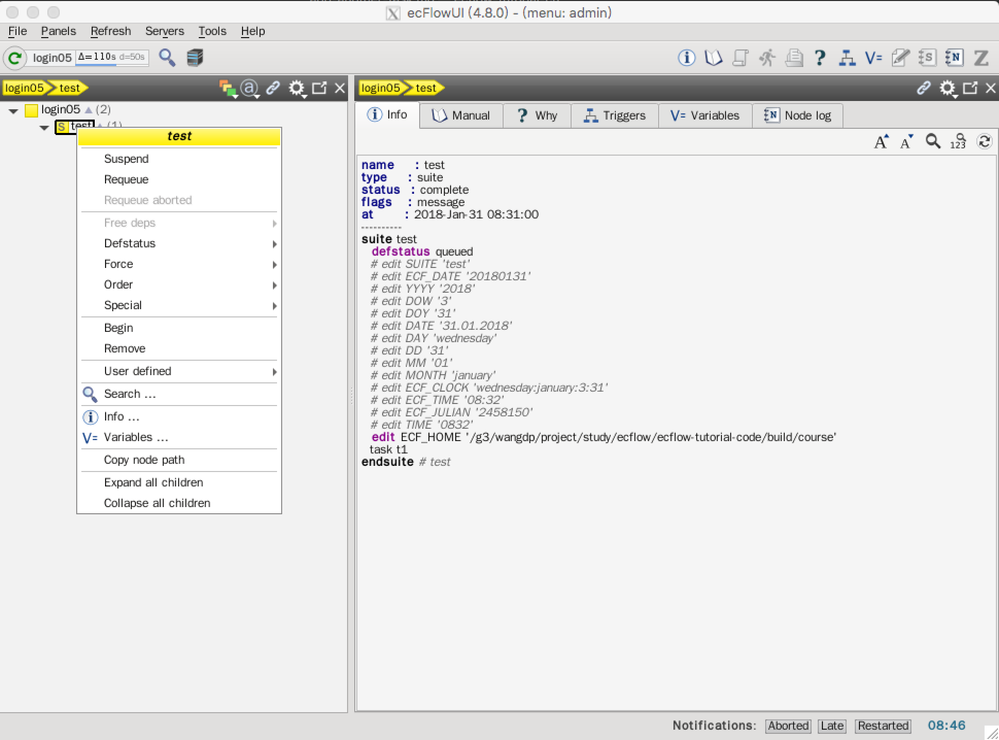

添加另一个任务
我们来添加一个新任务 t2，需要修改 suite definition 文件并添加一个新的脚本。
在 $ECF_HOEM/course/test 中创建文件 t2.ecf，直接复制 t1.ecf 即可。
首先修改 suite definition。
文本方式
在重新加载 suite 的任何部分前推荐先将 suite 挂起（suspend）。在 ecflow_ui 中右键点击 suite，选择 Suspend。当修改完成后，右键点击 suite，选择 Resume。

挂起后，suite 颜色会改变

恢复 suite

添加新任务 t2 的 def 文件
# Definition of the suite test
suite test
edit ECF_HOME "$ECF_HOME/course"
task t1
task t2
endsuite
译者注：与之前一样，需要设置环境变量
$ECF_HOME
在 test 目录下，复制 t1.ecf，创建 task t2 的脚本 t2.ecf。
重新加载 def 文件
ecflow_client --load=test.def
如果已经加载过 def 文件，上述命令不会成功。
$ecflow_client --host=login05 --port=33083 --load=../../../build/course/test.def
Error: request( --load=../../../build/course/test.def :wangdp ) failed! Server replied with: 'Add Suite failed: A Suite of name 'test' already exist'
make: *** [load] Error 1
需要删除原有的suite，并重新加载：
ecflow_client --host=login05 --port=33083 --delete=_all_
ecflow_client --host=login05 --port=33083 --load=test.def
接着启动 suite
ecflow_client --host=login05 --port=33083 --begin=test
可以不用删除原来的 suite，替换整个 suite 定义：
ecflow_client --host=login05 --port=33083 --replace=/test test.def
可以只替换 suite 的一部分：
ecflow_client --host=login05 --port=33083 --replace=/test/t2 test.def
替换一部分后的状态

这时可以恢复 suite。
Python方式
使用 Client Server API 删除 suite definition，重载和启动 suite。
首先更新 test.py，重新生成 def 文件：
import os
from pathlib import Path
from ecflow import Defs, Suite, Task, Edit
print("Creating suite definition")
home = os.path.abspath(Path(Path(__file__).parent, "../../../build/course"))
defs = Defs(
Suite(
'test',
Edit(ECF_HOME=home),
Task('t1'),
Task('t2')
)
)
print(defs)
print("Checking job creation: .ecf -> .job0")
print(defs.check_job_creation())
print("Saving definition to file 'test.def'")
defs.save_as_defs(str(Path(home, "test.def")))
删除所有的 suite，重新加载修改后的 def文件，需要修改 client.py：
import os
from pathlib import Path
import ecflow
home = os.path.abspath(Path(Path(__file__).parent, "../../../build/course"))
try:
print("Loading definition in 'test.def' into the server")
ci = ecflow.Client('login05', '33083')
ci.delete("/test")
ci.load(str(Path(home, "test.def")))
ci.begin_suite("test")
except RuntimeError as e:
print("Failed:", e)
我们还可以替换全部或部分 suite。
另外，我们不希望 suite 立即运行，可以通过 ecflowview 挂起整个 suite，不过我们每次都需要记得这样做。
为了方便，可以使用 Python Client API 挂起 suite。修改上面的 client.py：
import os
from pathlib import Path
import ecflow
home = os.path.abspath(Path(Path(__file__).parent, "../../../build/course"))
try:
print("Loading definition in 'test.def' into the server")
ci = ecflow.Client('login05', '33083')
ci.suspend("/test")
ci.replace("/test", str(Path(home, "test.def")))
except RuntimeError as e:
print("Failed:", e)
说明：为了简便，后面的例子我们都不会列出加载 suite 的过程。
任务
- 使用 ecflow_ui 或 pyhton 的
ecflow.Client.suspend挂起 suite - 创建新的 task
- 通过拷贝
t1.ecf创建t2.ecf - 更新 python 脚本
test.py和client.py或test.def 替换 suite
python:
python test.py python client.py文本：
ecflow_clinet --replace=/test test.def使用 ecflow_ui 恢复 suite
在 ecflow_ui 中观察两个任务运行情况，它们应该在同一时刻运行。